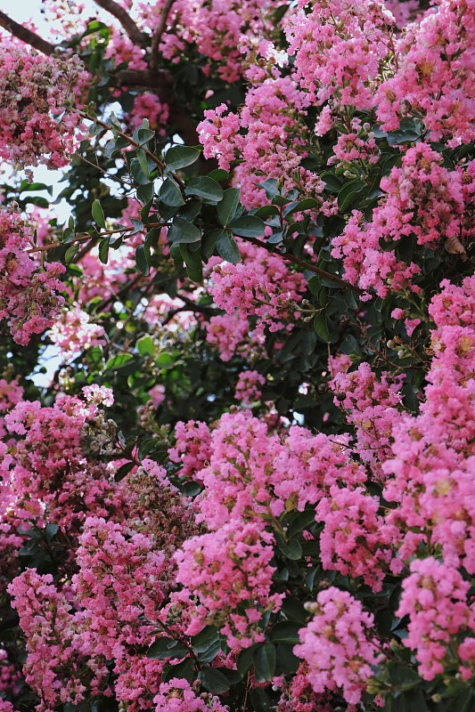
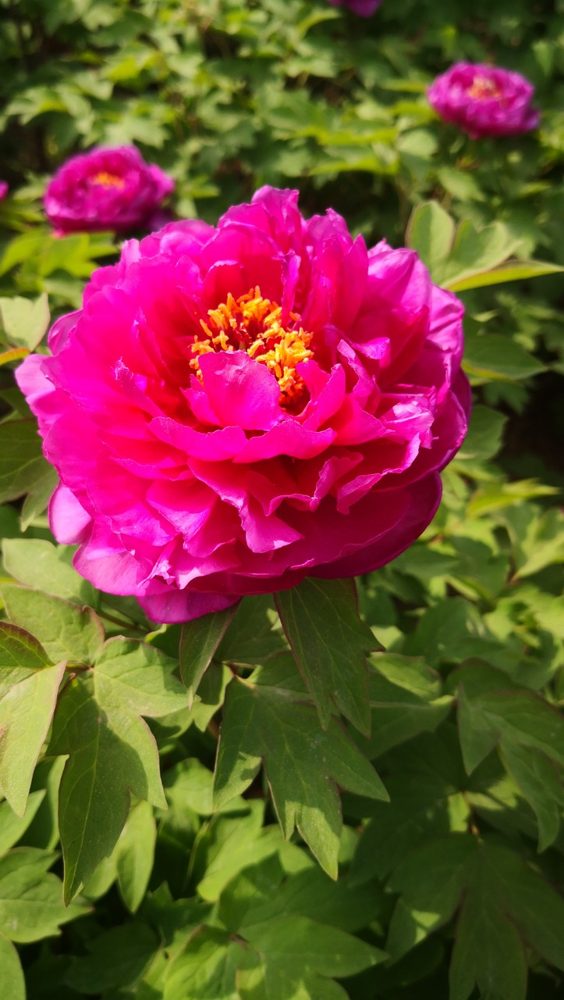
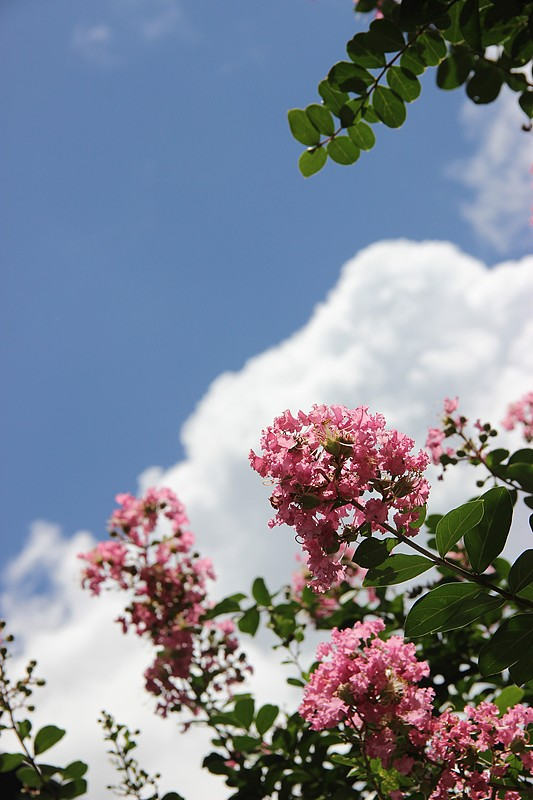
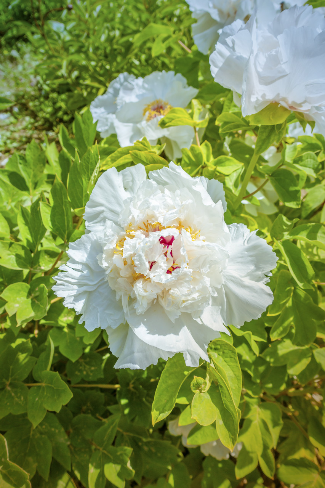

2005年7月29日，盐城市五届人大常委会第17次会议通过议案，正式确定紫薇、牡丹为市花。这座"国际湿地城市"，用两种花写下城市性格的完整注脚。


盐城的市花并非一次定型，而是经历了两次重要立法确认——先定下紫薇，再以牡丹补足另一半。
一座城市只需一朵市花便足够，但盐城选择了"紫薇 + 牡丹"的组合。这背后是自然、历史与生活三重逻辑的叠加——它们共同回答了一个问题：这座城市需要表达什么？
盐城地处北亚热带向暖温带过渡地带，季风明显、雨水丰沛、日照充足，紫薇花期绵长、花色艳丽、管护简便，天然契合城市绿化；而牡丹尤以耐盐碱著称，恰能在盐城沿海滩涂与盐碱土地上扎根生长，是真正"长在这片土上"的花。
气候过渡带 · 耐盐碱 · 易管护便仓镇枯枝牡丹有约700年栽培史，与扬州琼花、苏州并蒂莲并称"江苏花卉三绝"，其传奇故事更被写入《镜花缘》。"海水三千丈，牡丹七百年"，牡丹承载着这座城市最深沉的文化记忆与气节。
700年枯枝牡丹 · 江苏花卉三绝 · 《镜花缘》紫薇遍植街巷，"百日红"染遍盛夏，是市民抬头即见的日常风景；牡丹每逢谷雨"花似锦、人如潮"，从赏花到牡丹文化节、文创与乡村产业，成为可参与、可传承的公共生活。一日常、一节庆，一普及、一经典。
街巷日常 · 节庆民俗 · 产业共生紫薇与牡丹，一热一静、一近一远，恰好构成盐城性格的两面——既是活泼的宜居之城，也是厚重的文化之城。

紫薇 · 百日红落叶灌木或小乔木，树干光滑洁净，树姿优美。花期自夏至秋、长达百日，故称"百日红"。

牡丹 · 国色天香花大色艳、雍容华贵，素有"花中之王""国色天香"之誉。盐城便仓枯枝牡丹更是天下一绝。
两朵花不是简单的并列，而是相互补充、各司其职，共同拼出完整的城市形象。
一个"向上生长、装点当下"，一个"向下扎根、连接过去"。紫薇负责让城市在盛夏生辉，牡丹负责让城市在历史中闪光——二者合一，便是盐城"既有生活烟火、又有文化厚度"的完整表达。